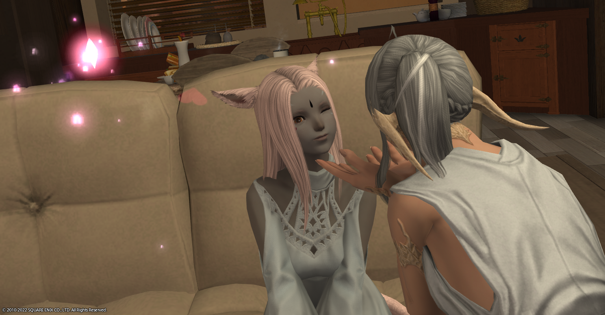
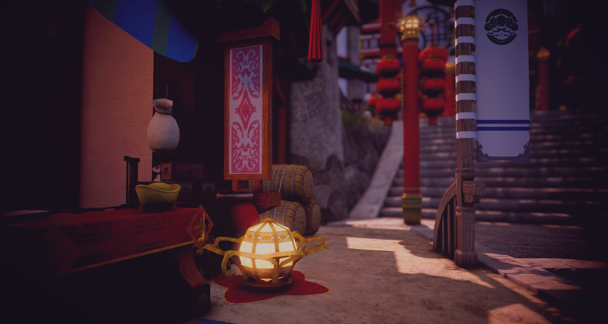
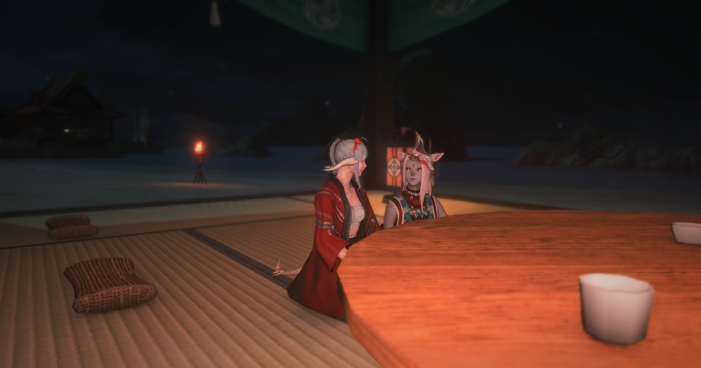

我们
我们之间的距离很近又很远、清晰却又朦胧。
每当我仰望着星空，看向天上这颗皎洁明月时，忍不住会去想我们之间究竟可以走多远？
（然而成都盆地的原因雾天比较多，通常都看不到，乐）
又或者会不会在某处路口停下？但我知道不管我们身处何地，抬头看到的总是同一片星空，同一颗月亮。
而此时此刻，或许就是最好的吧。
陆游在《游山西村》中曾提笔这样写道：我不是一个会去思考未来会发生什么事情的人，对我来说活好当下、做好自己，或许未来“祂”会给我们一个答案吧。
“山穷水复疑无路，柳暗花明又一村”。
看呐，今夜，月色真美。

写给喵酱
一些想说的话
写于2022/5/13
想着快到520了，也不知道能给你准备点啥，就做了个这样的网页（诶嘿） 其实我不会写网页前端的代码，这只是找了个模板照葫芦画瓢随便弄的啦，希望你会喜欢哦。知道今年你会很忙，没有什么时间一起聊天一起玩。但是没有关系哦，我会去尽量支持你，为你加油吧。 毕竟学习已经很辛苦了，每天如果能开开心心的过，就已经是最好的啦。 有时候就算想你了我可能也不会说出来，去留出点空间，不想让你觉得太累捏。
我们相互之间认识的时间其实并不算长，还有好多话想找你聊聊，想去试着了解你的一切。我也是个大笨蛋，根本就不会谈恋爱， 有时候我也不知道该去为你做些什么才好。甚至还不会说话，容易得罪人，有些消息可能也不知道该怎么回复。 也不知道你有多喜欢我，不知道在你眼中我到底哪里好呢。但我会去试着变得更加喜欢你、了解你。慢慢来吧，毕竟还有好多东西需要一点一点去互相了解呢。
网恋什么的我真的不懂捏，所以有时候真不知道该怎么做才好，也不知道我们会不会什么时候在哪里停下脚步。 但是网页最下方的计数器正记录着我们在一起成长的日子捏，一起去见证明天会是怎样的未来吧。
如果喜欢我的话以后还请多多说出来哦，我会很开心的啦。
爱你！Mua！
Story
of
Mr.Deng & Ms.Zhong
第一次亲亲
那天晚上，月黑风高，邓先森搂着小钟再香樟食堂门口的台阶上坐着，心里扑通扑通的跳，在小钟说到她老婆的时候，捧起她的脸
有老婆了不介意再多一个男朋友吧？邓先森鼓起了老大的勇气，凑了上去，还好没有迎来耳光。
嗯，女孩子的嘴也是软软的。 2020.11.14
第一次牵手
晚上，邓先森送钟小姐回宿舍，走到香樟花田，鼓足了勇气
我这个手有点闲，要不给你拉一下？
迟疑了一秒，手放在了一起
第一次牵手，要说感觉，就是一个字——软，毕竟没牵过别人的，盒盒盒

一切从这里开始
邓先森在青协招新的时候一眼相中了钟小姐的简历，于是就找到青协的部长要人(唯唯诺诺)。不过好在胖胖也很给面子，痛快的答应了。
我们的故事，也就开始了~